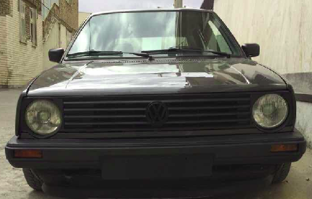

Streets king of all times
The Volkswagen Golf Mk2 is a compact car, the second generation of the Volkswagen Golf and the successor to the Volkswagen Golf Mk1. It was Volkswagen's highest volume seller from 1983 and remained in (German) production until late 1992. The Mk2 was larger than the Mk1; its wheelbase grew slightly (+ 75 mm (3.0 in)), as did exterior dimensions (length + 180 mm (7.1 in), width + 55 mm (2.2 in), height + 5 mm (0.2 in)). Weight was up accordingly by about 120 kg (260 lb). Exterior design, developed in-house by VW design director Schäfer, kept the general lines of its Giugiaro-designed predecessor, but was slightly more rounded. All told, about 6.3 million[2] second-generation Golfs were built.
You might want to look here for More info